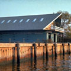

|  |
Martin Boathouse
Built in 1865
Office of the current College President |
The Martin Boathouse, also known as the Marist Boathouse, was built in 1963 to house the rowing and sailing equipment of Marist College. It is named in memory of William Martin, who was the chairman responsible for funding the construction of the boathouse. There are two ramps that lead directly into the Hudson River, allowing the crew team quick and easy access for training and competitions, such as races and regattas. At first, Blue Jays, 13-foot wooden sloop rigged boats, were used by students and faculty for competition and pleasure sailing. Later, in 1966, these were replaced by Barnegats, 19-foot fiberglass sloops. These sloops could hold six people, but were used in competitions with a crew of two. They were later replaced with smaller boats.
Before Marist built the Martin boathouse, the city of Poughkeepsie owned the other boathouses on the waterfront property: the California Boathouse and Cornell Boathouse. These were used for local high school crew teams in the National Crew Regattas. Marist was allowed to buy the two boathouses and develop the waterfront property under the condition that the local high school teams would still be able to use them for their crew activities.
Marist faculty believed a Butler type construction for the boathouse would be the most beneficial. It would be utilized for the storage of shells, and also serve as a dormitory for visiting crews. Once the season was over, the space could be used as an athletic facility for gymnastics, weight training lifting, and as a training space for the crew team members. The goal of this plan was to make team practices easier and more convenient and to offer greater hospitality to visiting teams.
The upper floor of the boathouse, consisting of two rooms, is furnished with restroom and shower facilities as well as a sleeping space for visiting teams who compete in regattas on the Hudson River. Larry Davis, a past Marist crew coach, used to live in the boathouse with his wife, Vicki. They moved to the boathouse in August of 1981 when Larry was hired to be the business manager of athletics at the McCann Center and coach of the varsity crew team. Vicki, quickly adapting to the unique space, made some small home improvements and furnished the floor by adding wallpaper to make it homier.
The Marist crew team won the prestigious Haight Trophy for five consecutive years, but their streak ended in 1966. The team's crowning achievement came in 2002 when they qualified for the Henley Cup Regatta in Oxford, England. Unfortunately, they did not make it past the second round, as they were defeated by Harvard, who was the overall winner.
The boathouse is named after William Martin, a local insurance agent who was the chairman of the fund drive to construct the boathouse. He passed away before the boathouse’s completion and Brother Joannes requested it be named in his memory.